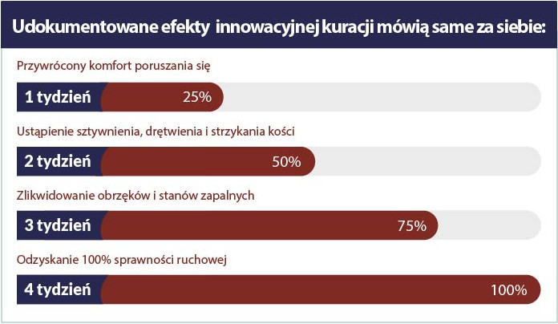

Opublikowano:
ARTYKUŁY / NAJNOWSZE ODKRYCIA / „Koniec ery bólu stawów ..."
RAPORT REDAKCJI:Prof. Waldemar Kranicki (ekspert ds. biologii molekularnej) postanowił wyleczyć swoją matkę z postępującej artrozy – chciał uwolnić ją od przewlekłego bólu, sztywności i trzeszczenia stawów oraz przywrócić pełną sprawność ruchową. To był początek rewolucji w dziedzinie reumatologii! Profesor, po roku zaawansowanych badań laboratoryjnych, opracował naturalną, bezpieczną i łatwą w stosowaniu formułę makro-molekularną, która likwiduje ból oraz odbudowuje stawy i kręgosłup uwalniając od sztywności, zapaleń, obrzęków i zwyrodnień. W efekcie przywraca pełną sprawność fizyczną w zaledwie 28 dni.
Profesjonalne pisma medyczne już okrzyknęły tę kurację „pionierskim osiągnięciem w reumatologii”, a profesor za swoje osiągnięcie otrzymał nominację do Nagrody Laskera (przyznawana za badania w dziedzinie medycyny). Dzięki działaniu jego formuły, nawet osoby z najcięższymi i długoletnimi zwyrodnieniami, mogą w sposób w pełni automatyczny i pozbawiony wysiłku trwale odbudować stawy i kręgosłup, odzyskać pełną sprawność fizyczną i uwolnić się od niszczących wątrobę tabletek przeciwbólowych.
Te słowa potwierdza ponad 17 tys. zadowolonych użytkowników makro-molekularnej formuły odbudowującej stawy i kręgosłup, którzy już pozbyli się bólu i odzyskali 100% sprawności fizycznej. Dlatego postanowiliśmy wziąć pod lupę stosowane dotąd sposoby na problemy ze stawami i kręgosłupem. Oto wnioski:
Istnieje wiele zestawów ćwiczeń „na mocniejsze stawy”, które należy wykonywać codziennie. Nie jest to jednak żadne rozwiązanie, ponieważ jedynie opóźniają rozwój problemu (i to w nieznacznym stopniu). Dodatkowo ćwiczenia są bardzo bolesne i nie każdy potrafi je wykonać. Nawet mały błąd podczas ćwiczeń, jeśli jest powtarzany często prowadzi do powstania i utrwalenia poważnych zwyrodnień. W najlepszym wypadku marnujemy czas na ćwiczenia, które i tak nie przynoszą efektów, a jednocześnie ryzykujemy zdrowie całego organizmu.
Tabletka przeciwbólowa działa maksymalnie 3 godziny. Żeby uśmierzać przewlekły ból trzeba by było łykać ich kilka, a nawet kilkanaście na dobę. Pamiętać, żeby kupować je na zapas i mieć zawsze przy sobie. To prosty sposób, by zniszczyć nie tylko wątrobę i żołądek, ale także nerki czy jelita. Żaden portfel ani żaden organizm tego nie wytrzyma. Maści i żele mogą jedynie rozgrzać lub schłodzić obolałe miejsca, przynosząc kilkuminutową ulgę. Nie wchłaniają się i nie wpływają na źródło problemów choćby w najmniejszym stopniu. Rehabilitacja również nic nie daje, ponieważ po kilku godzinach ból zawsze wraca. To tylko strata czasu.
Czy jest jakikolwiek sens marnować ciężko zarobione pieniądze na chemiczne środki, które nie dość, że mają nikłe i krótkotrwałe działanie, to jeszcze zatruwają i wyniszczają organizm? Lub na fizjoterapie, które przynoszą tylko chwilową ulgę – a ból po nich wraca często ze zdwojoną siłą? Oczywiście, że nie..
Stosowane dotąd sposoby na stawy mają nikłe i krótkotrwałe działanie. Wysysają z człowieka energię i ciężko zarobione pieniądze. Natomiast kuracja prof. Kranickiego przynosi szybkie, niespotykane dotąd w medycynie efekty. Opiera się wyłącznie na naturalnych składnikach i nie powoduje żadnych skutków ubocznych. Natychmiast zwalcza źródło bólu i dzień po dniu odbudowuje chrząstkę stawową przywracając pełną sprawność ruchową bez sztywności, trzeszczenia i bólu. Ta innowacyjna formuła to połączenie najnowszych osiągnięć w obszarze biologii molekularnej, neurologii i reumatologii.
Zawarte w niej składniki są w pełni naturalne i bezpieczne dla zdrowia. Jednak dzięki odpowiedniej syntezie chemicznej mają o 300% silniejsze właściwości regenerująco-odbudowujące. Codzienne stosowanie tych substancji przywraca sprawność ruchową nawet u osób z poważnymi i długoletnimi zwyrodnieniami, stanami zapalnymi czy komplikacjami po kontuzjach.
Kuracja dostępna jest już w sprzedaży detalicznej pod nazwą Flexinea+. Formuła ma postać aktywnych, w pełni naturalnych kapsułek, które błyskawicznie się wchłaniają (nie podrażniając układu trawiennego) i natychmiast likwidują ból, obrzęk i sztywność zarówno stawów jak i kręgosłupa. Ich stosowanie jest w pełni bezpieczne dla organizmu, czego dowiodły badania w renomowanym Institut für Orthopädie und Knochenkrankheiten w Essen.
Badania te wykazały również, że ta bioaktywna kuracja ma ponad 98% skuteczności. Dzięki niej osoby w wieku 21-93 lat, w zaledwie 28 dni odniosły spektakularne efekty zwalczania bólu, likwidowania obrzęków, sztywnienia, trzeszczenia i przeciwdziałania wszelkim zwyrodnieniom, stanom zapalnym czy komplikacjom po urazach stawów i kręgosłupa. Bez względu na wiek, płeć oraz przyczynę i długość występowania problemów czy stadium schorzenia.
Osoby poddane badaniom natychmiast po zastosowaniu makro-molekularnej formuły prof. Kranickiego uśmierzyły nawet najsilniejszy ból stawów i kręgosłupa. Dzięki temu wreszcie zaczęły bez przeszkód poruszać się i wykonywać wszystkie czynności, które do tej pory uniemożliwiał ból.
W kolejnych dniach kuracji badani weszli w fazę intensywnej odbudowy tkanki chrzęstnej i mazi stawowej, dzięki czemu pozbyli się sztywnienia, drętwienia i strzykania kości. Następnie wzmocnili stawy, ścięgna i mięśnie o 87% i zlikwidowali obrzęki oraz stany zapalne. Stawy i kręgosłup ulegały automatycznej odbudowie przez 24 godziny na dobę, nawet podczas snu.
W efekcie zwyrodnienia stawów i kręgosłupa zostały bezpowrotnie zlikwidowane, a badani pozbywając się bólu zyskali średnio 3 razy więcej energii i radości z życia. Ale to nie wszystko. Po zaledwie 28 dniach kuracji uczestnicy badań jednogłośnie przyznali, że odzyskali sprawność ruchową z wczesnej młodości. Dziś mogą swobodnie chodzić, biegać i tańczyć bez bólu czy przejmującego „chrupania” kości, tak jak w wieku 20-25 lat!
1. tydzień - natychmiastowe uśmierzenie bólu; przywrócony pełny komfort poruszania się
2. tydzień - intensywna odbudowa tkanki chrzęstnej i mazi stawowej; ustąpienie sztywnienia, drętwienia i strzykania kości
3. tydzień -wzmocnienie stawów, ścięgien i mięśni o 87%; zlikwidowanie obrzęków i stanów zapalnych
4. tydzień - trwała i pełna likwidacja zwyrodnień stawów i kręgosłupa; odzyskanie 100% sprawności ruchowej
Pani Jolanta: „Z mężem od lat prowadzimy gospodarstwo, to całe nasze życie. Teraz nastała moda na ekologiczne produkty, to i pracy w polu więcej. Cieszyliśmy się do momentu, aż stawy zaczęły szwankować. Ja miałam bolące, sztywne dłonie i łokcie, do tego kręgosłup mi trzaskał. Mąż miał kłopoty z kolanami i biodrami. Nie widziało się nam rzucać ziemię odłogiem przez jakieś bóle. W porę dowiedzieliśmy się o Flexinea+. Jakbyśmy nie skorzystali, to byłby największy błąd naszego życia! Czuliśmy się jakbyśmy mieli po 100 lat, a tylko 4 tygodnie wystarczyły, by pozbyć się wszystkich kłopotów, ba! teraz praca idzie nam szybciej niż naszym dzieciom! Mąż codziennie jeździ rowerem po zakupy do wsi, ja z przyjemnością zajmuję się ogródkiem. Żadnego bólu, trzaskania, drętwienia, opuchlizna się nie robi. Na weselu syna właściwie w ogóle nie schodziliśmy z parkietu! Czy może być piękniej? Wielkie dzięki.”
Skuteczność Flexinea+ została dowiedziona ponad wszelką wątpliwość przez Institut für Orthopädie und Knochenkrankheiten w Essen. Prof. Kranicki nieustannie zbiera nominacje do prestiżowych nagród za swoje przełomowe odkrycie, w tym nominację do Nagrody Laskera.
Dobra wiadomość jest taka, że można teraz otrzymać Flexinea+ z dofinansowaniem 172 zł taniej. Kurację można otrzymać wyłącznie za pośrednictwem poniższej strony.
Kliknij tutaj, aby otrzymać kurację z dofinansowaniem i odzyskać sprawne stawy w 28 dni >>Specjalna oferta ważna do
POGODA
Najczęściej czytane:
Co jeść przy RZS?
Czy trądzik to objaw reumatyzmu?
RZS – 5 faktów, które musisz znać
Jak skutecznie pozbyć się Halluksów?
Łokieć tenisisty – dolegliwość cywilizacyjna czy objaw pierwszych zwyrodnień?
Czym jest łuszczycowe zapalenie stawów?
Zwyrodnienia stawów – wyrok. Czy na pewno?
Sposób na mocne stawy
7 prostych ćwiczeń na kręgosłup
Przetestuj wkładki na ból stawów
Komentarze
Czytaj komentarze do artykułu „Koniec ery bólu stawów..."